About
A people's synthesizer is a requirement, not a slogan: one BOM, one STL set, 1:1 paper templates and SemVer releases, so any workshop can build the same instrument. Open schematics, firmware and geometry — no vendor lock-in, no cloud.
Bukifon is a musical instrument platform built from accessible parts and printed on a regular 3D printer. The idea is to combine three worlds in one enclosure: a sampler in the spirit of Elektron Digitakt, a synthesizer in the spirit of Elektron Syntakt, and an open platform where anyone can write their own modules — software (C++/Lua) and analog (bus cartridges).
The project is fully open: KiCad schematics, C++ firmware, parametric mechanics (STL/3MF), documentation and semantic-versioning rules. The name comes from “buki” (the second letter of the Cyrillic alphabet) and Greek φωνή — “sound of letters”, “voice of signs”.
Ergonomics
Two Lapka-42 keyboard halves splayed outward (±18°) with thumb clusters facing the centre, and two 60 mm faders between them. Hands rest like on a console, not on a laptop.
Sound
4 parts, 8 voices, 4-operator FM, wavetable, ZDF filters, Moog-style ladder (AS3320), Polyvox character, 3D modulation matrix with 16 slots.
Sequencer
Elektron-style workflow: p-locks, trig conditions, microtiming, sound locks, macros and ctrl-all.
RF/display
ESP32-P4 + ESP32-C6: Wi-Fi 6/BLE 5.3, RGB565/DSI 800×480, 32 MB PSRAM, USB HS.
Keyboard & DAW
Works as a USB keyboard: 42 Lapka-42 keys as a typing layout with layers, 16 encoders as CC controllers, transport. Plus BLE MIDI and BLE HID.
Modules
26-pin bus for analog cartridges (VCO, filters, PT2399), software modules through an SDK, and swappable input decks: 18 pads or 42 keys.
Three modes, one enclosure
| Mode | What it does |
|---|---|
| Sampler | 8 tracks (mono/stereo pending benchmark), recording and import via USB-C/SD, slicing, granular, insert FX, p-locks. Digitakt class. |
| Synth | 8-voice FM/wavetable, ZDF filters, analog modules on the bus. Syntakt class. |
| Hybrid | Samples as synthesis sources; shared sequencer and mod matrix across all modes. |
Hardware
Case v0.5-B — 8° wedge: front edge 32 mm, rear 61.5 mm, 29.5 mm rise, R4 chamfer, display at 35° to the panel. Support-free print: 279 g / 18.3 h. Verified with a 1:1 cardboard profile.
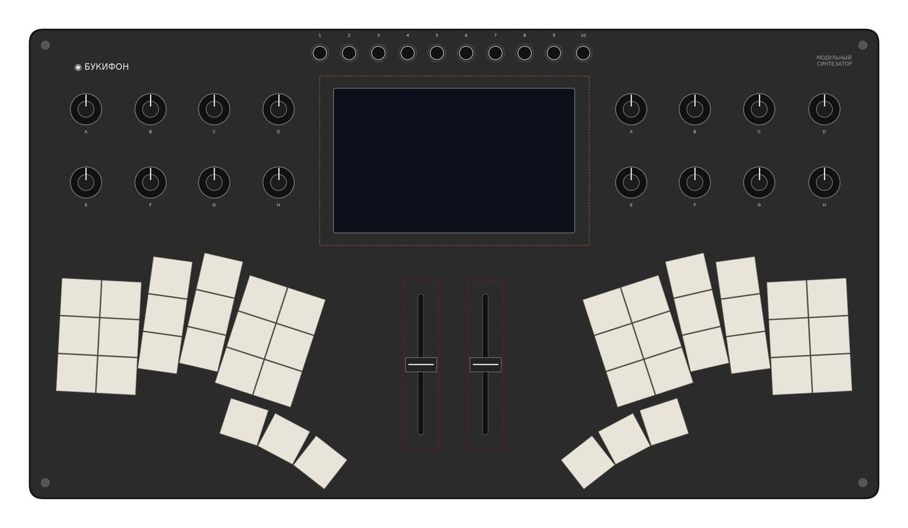
| Parameter | Value |
|---|---|
| Case | v0.5-B: 380 × 210 × 61.5 mm, 8° wedge (front 32 / rear 61.5), PETG, support-free; panel splits 193 + 190 mm with a dovetail |
| Keyboard | 2 × 21 = 42 Lapka-42 keys, Choc 18 × 17 mm, halves at ±18° |
| Encoders | 16 × Ø14 mm, two 4 × 2 blocks |
| Display | 5.0″ 800×480, cutout 108 × 64.8 mm, bezel-less |
| Connectors | 10 × 3.5 mm mini-jacks on top, USB-C, MIDI TRS, CV/Gate |
| Audio | PCM5102A DAC + PCM1808 ADC (sampling input) |
| Power | 1S2P 18650 / LiPo battery, USB-C charging |
| Power | PWR-2: 1S2P + BMS + MAX17048; +12 V 330 mA, −12 V 95 mA for the module bus, +5 V 1.6 A; fed from BQ24074 OUT/VSYS |
| MCU | ESP32-S3 (people’s version, native Wi-Fi/BT) or ESP32-P4 + ESP32-C6 (Wi-Fi 6 / BLE 5.3) |
| USB | single-port composite: HID keyboard + MIDI + UAC2 + CDC |
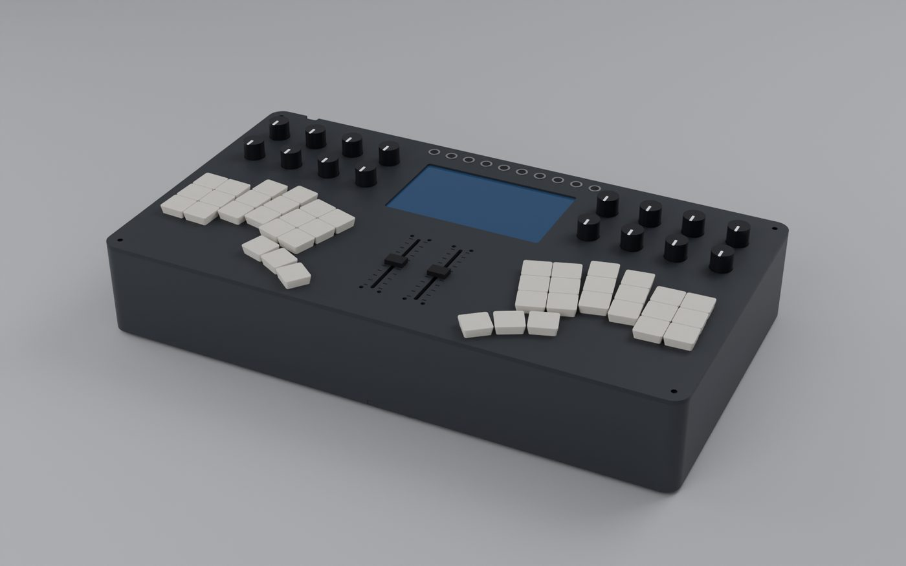
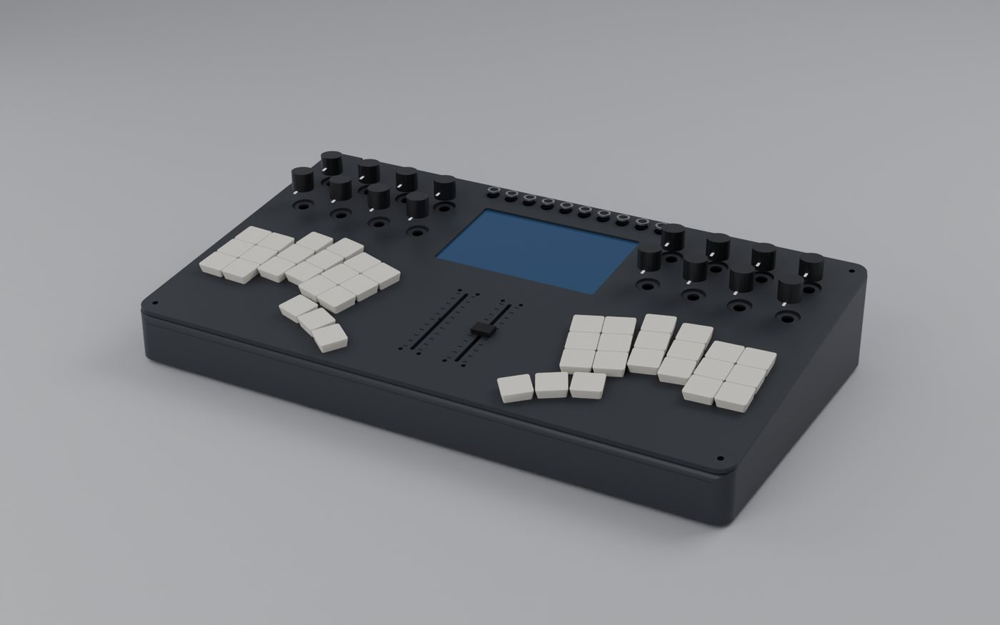
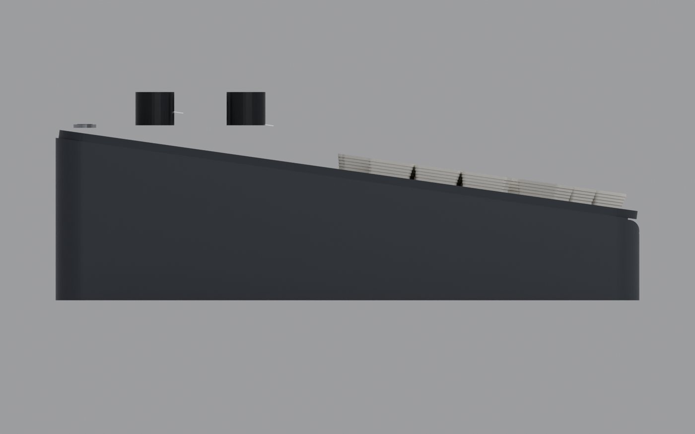
Status (v0.25.1)
pole (8 cores, RTX 3060): 248/248 tests, IDF builds P4.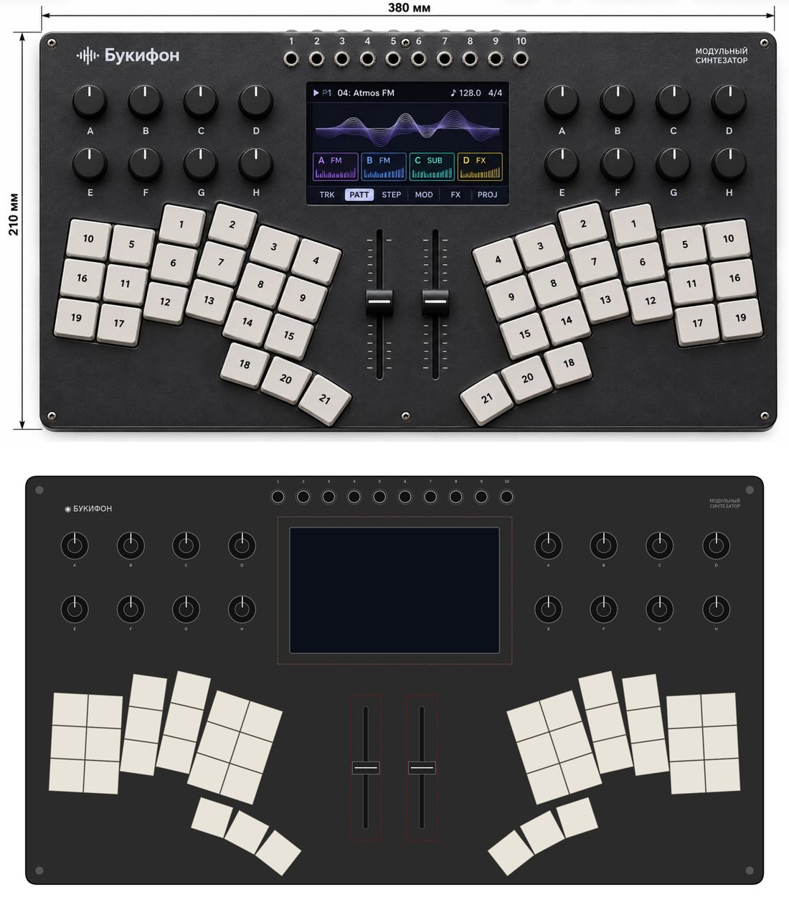
Try the interface in your browser
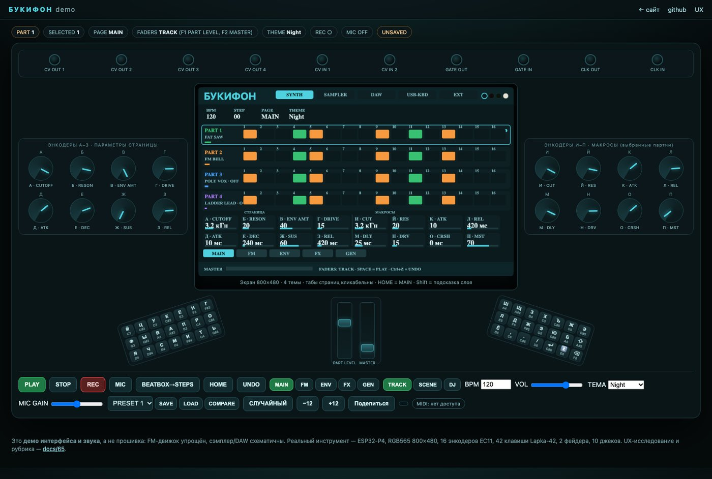
Interactive demo: 5 pages incl. a GEN page (prob/euclid/mutate/scale/arp/evolve/seed), 4 parts × 16 steps, 16 encoders, 42 Lapka-42 keys, 2 faders, 10 jacks, FM sound and Web MIDI. It is a UI/UX model, not the firmware — but you can feel the workflow now.
Where to build in Russia
Boards and cases can be ordered from local workshops — guide with RFQ template and price ranges: docs/72.
Moscow
Rezonit (Zelenograd, prototypes 2–3 days), A-Contract, Inter-Plata (5–500 boards), NPP Asti (full cycle), Moscow Polytech pilot, VG-Line (music gear assembly), Skoltech FabLab; 3D printing — Modelica3D/PIMTEH.
St. Petersburg
Rezonit SPb (2–3 days), AXIOMA, Erikon (2 SMT lines), FabLab Polytech, LETI center.
Nizhny Novgorod
TeleREM (SMD/BGA, device assembly, tuning), NPO Promyshlennye Resheniya (boards + assembly).
Design: panel concepts & screen themes
One panel — different materials, colours and screen themes. Below: external design concepts and 4 fixed 800×480 screen themes (palette — docs/62).
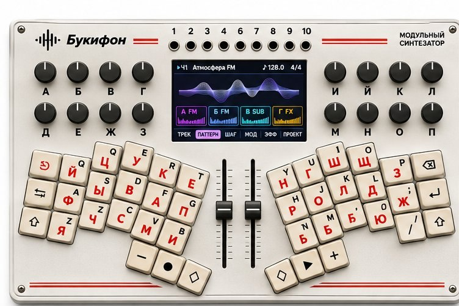
Concept A · light
Light panel, red accents, dark knobs.
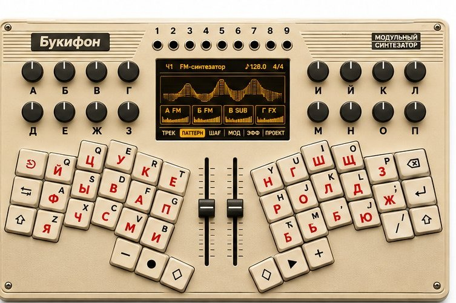
Concept B · beige
Beige panel, amber screen, warm character.
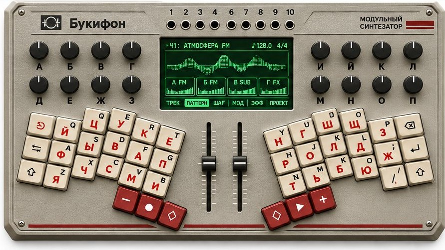
Concept C · dark
Dark panel, phosphor-green screen.
800×480 screen themes (same in demo and on hardware)
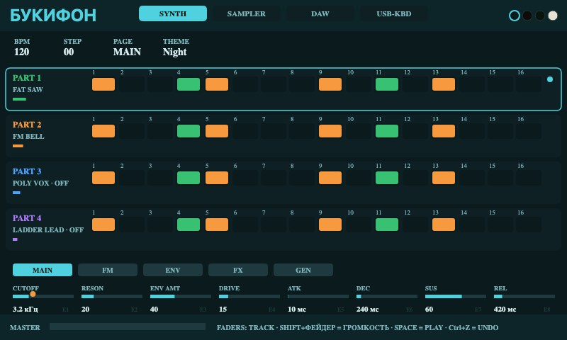
Night
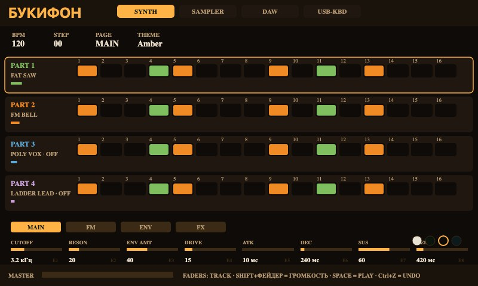
Amber
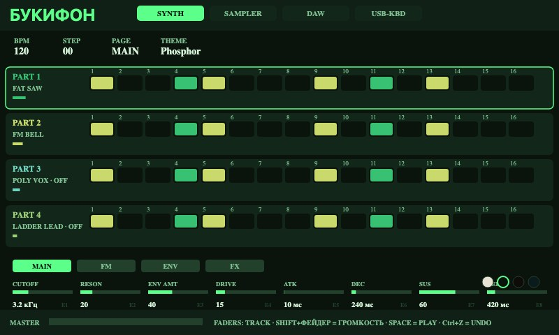
Phosphor
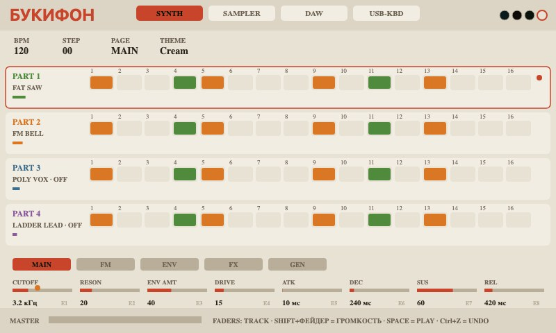
Cream
Case variants
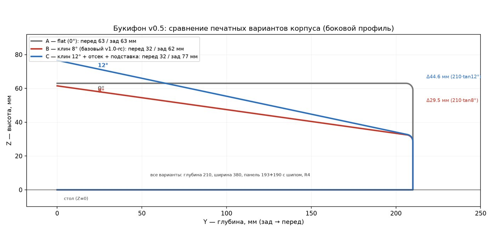
One v0.4 panel (380×210, 42 Lapka-42 keys, 16 encoders) in four cases: A flat 302 g (desk/studio), B 8° wedge 277 g, B-light 230 g / 11.1 h (people's version), C 12° 314 g with closed 1S2P bay, folding stand and cable channel. Fitcheck — 0 collisions.
Four modes — one instrument
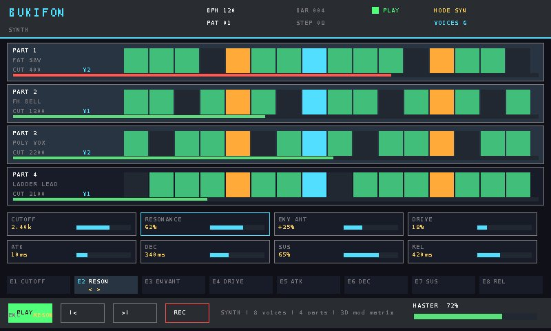
Synth
FM/wavetable: cutoff, resonance, ADSR — 16 encoders at hand.
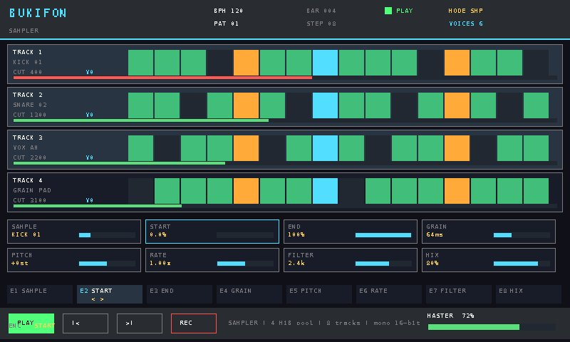
Sampler
Grains, start/end, 8 tracks; samples from SD.
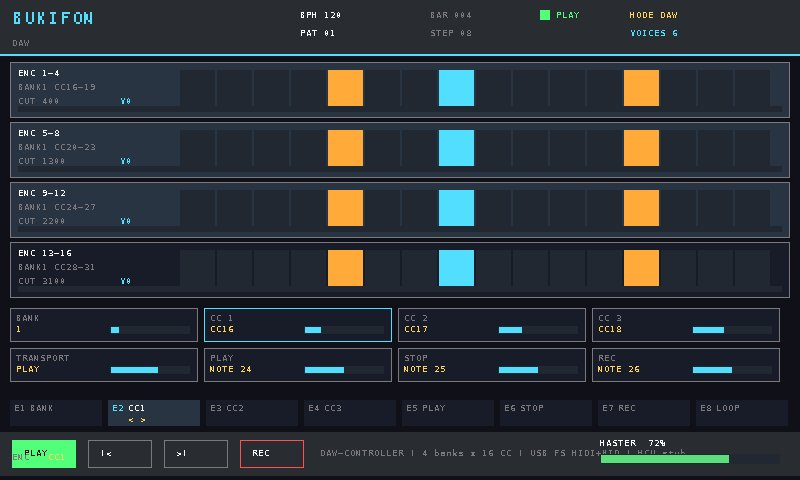
DAW
16 encoders as CC controllers, banks, transport.
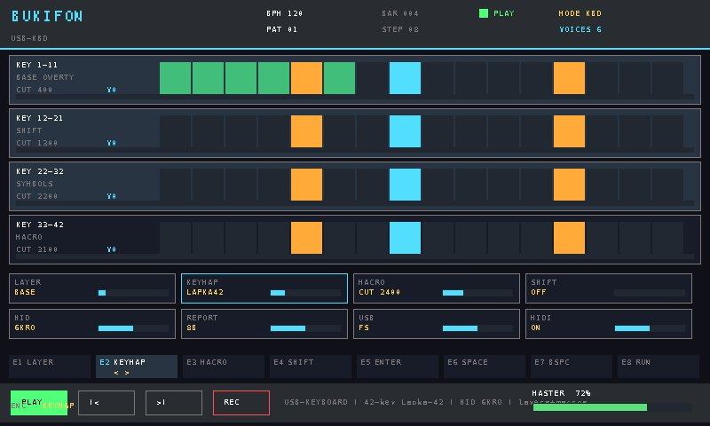
USB keyboard
HID layout with layers; 42 keys as a typing keyboard.
Kits: P4 Standard $299 · Full Bundle $399
“People’s instrument” is not about cutting controls: it is an honest product BOM and volume purchasing. The kit includes CORE-S3, PANEL-2, simplified PWR-2, a 5″ display, case and fasteners, 42 hot-swap Choc keys, 16 encoders, 2 faders, 10 jacks, CV/GATE, printed knobs and basic keycaps. Options: cartridges, microSD, PSU, battery pack, premium keycaps.
The case prints in 11 h / 230 g. The S3 version uses an SPI display (10–20 fps partial); RGB565/DSI is reserved for the P4 version. Batch 10–25, direct sale, limited DIY/beta. P4 standard ($299) after the P1 benchmark; full ($399) as a cartridge bundle. Details — docs/27-costdown.
Benchmark (P1)
The workload is frozen and measured by a portable harness: 8 voices of 4-op FM + 8 granular tracks, PSRAM streaming, 800×480 UI, USB UAC2 8×8. The criterion is max block ≤ 650 µs against a 1.333 ms deadline with a 24-hour soak.
Host run: worst audio 218 µs (16.4 % of the deadline), all 7 scenarios PASS, zero allocations in the audio path. Next — the same scenarios on ESP32-P4 and STM32H743 devkits: only they decide the MCU.
Modules & SDK
Bukifon is a platform: anyone can write their own module. Three extension kinds:
Audio-rate (C++)
Oscillators, effects, filters inside the audio callback. Module API v0: 10 functions, stack/state/time limits, WCET budget and automatic bypass on overload.
Control-rate (Lua)
Modulators, macros, sequencer logic — sandboxed with instruction/memory limits.
Analog cartridge
AS3340 VCO, LM13700/AS3320 filters, PT2399 — on the 26-pin bus, printable enclosure.
SDK: Module API v0 ·
module catalog ·
validator ·
examples: gain_fx (C++), lfo_module (Lua)
Documents and files
- ✅ microphone implemented: PANEL-2 rev.3 (ICS-43434, port/grille, mute+LED), CORE-2 rev.3 (I2S1, 3.5 mm jack + MAX9814), firmware — voice recording, beatbox, MIC UI, 311/311 tests;
- ✅ voice as input: microphone (I2S MEMS + 3.5 mm jack), mute+LED, voice→pad, beatbox→steps; vocoder v1.1 (docs/71);
- ✅ external sequencer: 8 MIDI tracks (CH/PC/vel/len, CC p-lock), clock in/out, GEN on external — firmware and demo (docs/70);
- Requirements registry — the single source of truth;
- Roadmap P0–P8 with numeric exit criteria;
- Feasibility on ESP32 — workload math and platform comparison;
- GPT consultation and independent review;
- Machine-readable panel spec (JSON);
- 1:1 panel template (PDF, 2 × A4);
- Case STL/3MF.